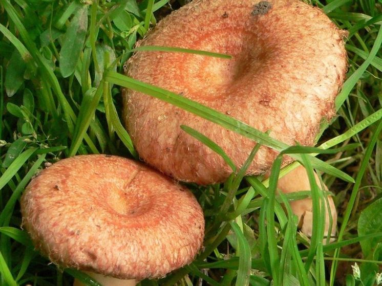

Началось с того, что меня посетила мысль: а не сделать ли мне на участке уютный уголок, используя хвойные?
А чего тянуть?
За нами поле. За полем лес стеной. Поле пахалось лет 20, потом 30 лет стояло непаханным. Появились елочки. Т.е. лес начал забирать своё — то, что у него когда-то беспардонно отобрали.
Я выкопал на поле порядка десяти ёлочек высотой 0,5-1 метра, доставил на участок и посадил в порядке, который посчитал уместным.
Года через три под ёлочками появилсь рыжики, к моему изумлению.
Грибочки каждый год собираем солим-жарим-парим и едим, а вопрос — как они там оказались, ест меня.
Спросил у поисковика Google — сколько живет и каких достигает размеров грибница (мицелий) рыжиков?
Машина ответила — "Грибница (мицелий) рыжиков живет десятки лет (в среднем от 10 до 30 лет и более), пока живет дерево-симбионт, а ее размеры в почве могут составлять от нескольких десятков сантиметров до нескольких метров в диаметре".
В моем случае до дерева-симбионта (ближайшей ели) не менее 200 метров и поле порядка 20-и лет перепахивалось могучими тракторами и еще 30 лет заброшенным простояло, повторюсь.
Делаю вывод — либо наука ошибается, либо произошло чудо, либо я поел псилоцибиновых грибов, приняв их за рыжиков, и страдаю теперь нарушением работы нервной системы и рецепторов мозга.
Замечу, у меня на участке есть четыре сосенки. Под одной из них растут маслята. Но те сосенки были из леса привезены, к ним претензий нет.
Наука вступила в конфликт с практикой. Вопрос остаётся жгучим.